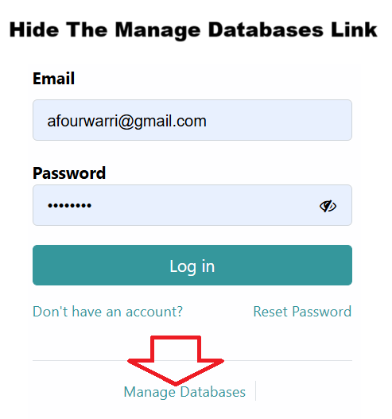

Clean and secure login: hide the Manage Databases link on the Odoo 16 login page and throws up 404 error if user tries to access web/database/manager. Works even when list_db = True, allowing modules like OCA's auto_backup to operate normally while keeping the login UI tidy.
Price: $13 (OPL-1)
list_db = True so backup tasks continueThe module injects a small CSS rule into the layout so the anchor pointing to /web/database/manager is hidden visually. This approach keeps the DOM intact and prevents JavaScript errors that can occur if elements are removed.
hide_db_manager_websafe into your Odoo addons folder.Odoo 16, hide manage databases, OPL-1, auto_backup, OCA, login security, hide database manager, 404 Not Found error, block manage databases access
See included screenshots for before/after login examples.
Email: transtech247@gmail.com